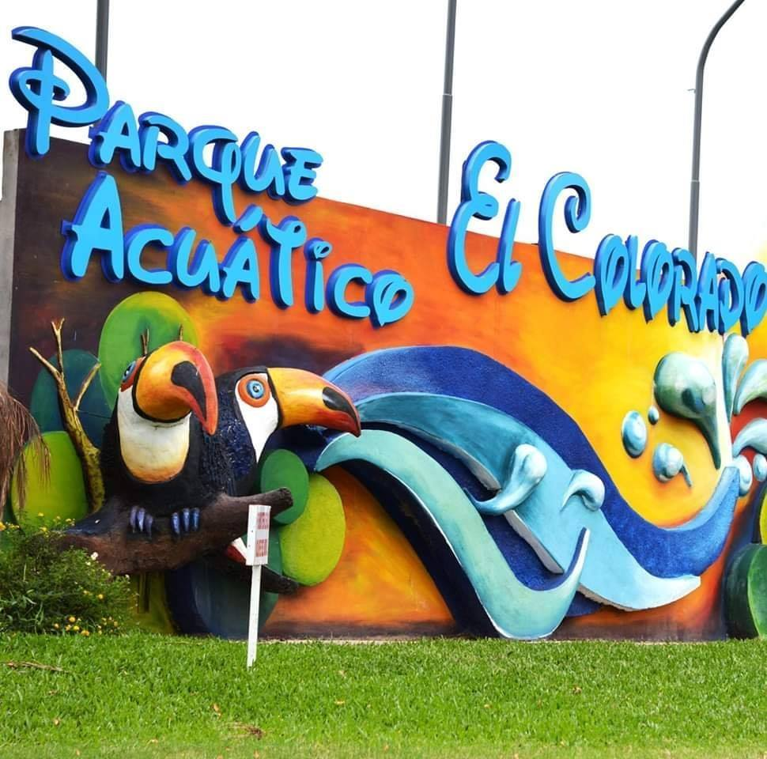

ATRACCIONES TURISTICAS DE FORMOSA

Parque Acuatico el Colorado
Leonardo de Sáenz Peña, quien llegó por primera vez a disfrutar del lugar, señaló que “el lugar es hermoso, muy bien cuidado, con mucha sombra, ofreciendo un lindo servicio”.
“Está espectacular el camping, ideal para compartir con amigos, con la familia y la atención es muy buena”, resaltó, remarcando que la entrada al mismo es gratuita.

Herradura
Herradura es una localidad argentina del departamento Laishí, en el sureste de la provincia de Formosa. Se halla en la margen derecha del río Paraguay, contando con concurridos balnearios sobre el mismo